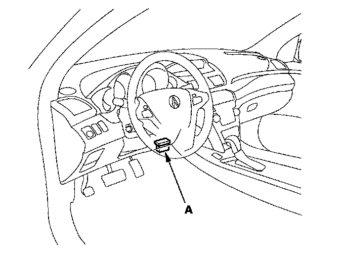
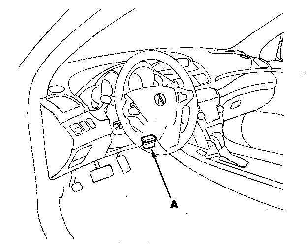

Throttle Body: Testing and Inspection
Throttle Body TestCarbon Accumulation Check
NOTE: If the malfunction indicator lamp (MIL) has been reported on, check for diagnostic trouble codes (DTCs).

1. Connect the HDS to the data link connector (DLC) (A) located under the driver's side of the dashboard.
2. Turn the ignition switch ON (II).
3. Make sure the HDS communicates with the PCM and other vehicle systems. If it does not, go to the DLC circuit troubleshooting.
4. Start the engine. Hold the engine speed at 3,000 rpm without load (in Park or neutral) until the radiator fan comes on, then let it idle.
5. Check the REL TP SENSOR in the DATA LIST with the HDS. The reading should be below 4.3 °. If it is not, clean the throttle body.
Throttle Position Learning Check
NOTE: If the malfunction indicator lamp (MIL) has been reported on, check for diagnostic trouble codes (DTCs).

1. Connect the HDS to the data link connector (DLC) (A) located under the driver's side of the dashboard.
2. Turn the ignition switch ON (II).
3. Make sure the HDS communicates with the PCM and other vehicle systems. If it does not, go to the DLC circuit troubleshooting. Testing and Inspection
4. Select the INSPECTION MENU with the HDS.
5. Do the LEARNING CHECK in the ETCS TEST. If needed, clean the throttle body.